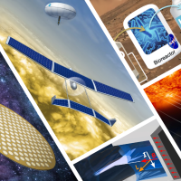
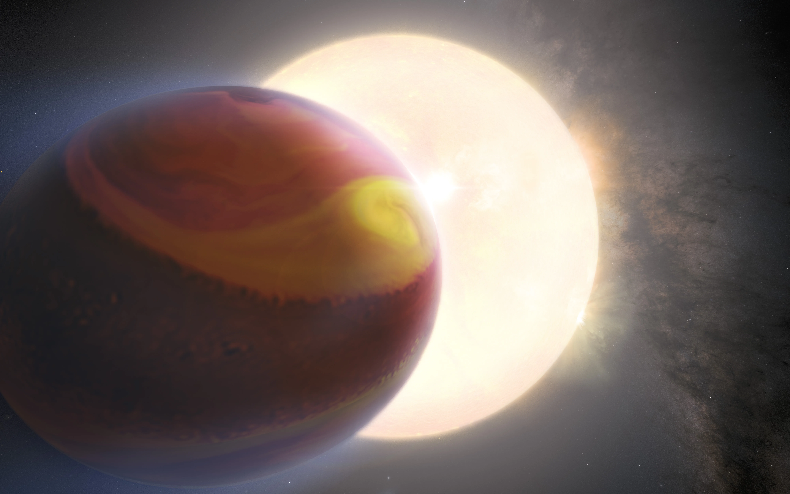
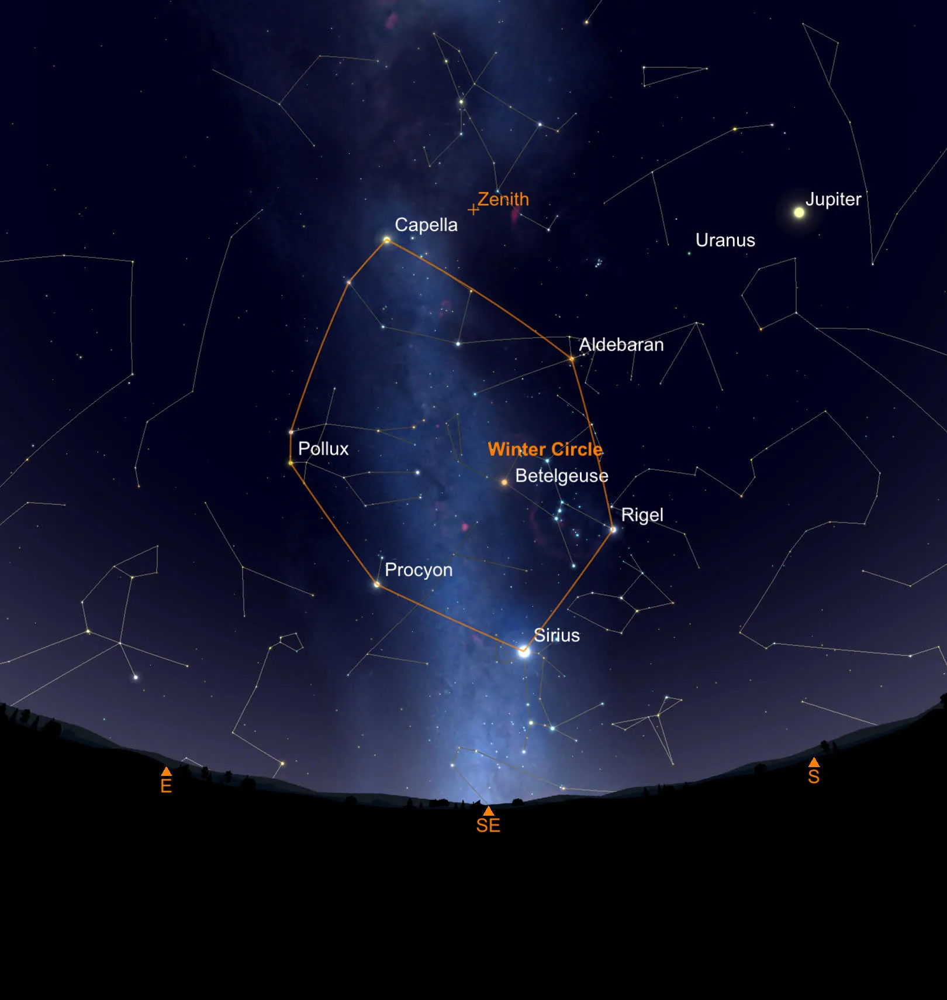
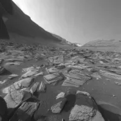

Featured News More NASA News
Article
4 min read
NASA sending Five payloads to Moon on Astrobotic's
Peregrine Lander
News Release
4 min read
NASA, United Arab Emirates Announce Artemis Lunar
Gateway Airlock
Article
6 min read
NASA Feature New Discoveries at American Astronomical
Society Meeting
Article
6 min read
NASA/JAXA XRISM Mission Reveals Its First Look at X-ray
Cosmos

4 min read
Funding Future Tech:NASA Names 2024 Innovative Concept
Studies
News Release

10 min read
NASA's Hubble Observes Exoplanet Atmosphere Changing Over 3
Years
Article

4 min read
January's Night Sky Notes: Connecting the 'Dots' with
Asterisms
Article

4 min read
NASA's Curiosity Rover Captures a Martian Day, From Dawn to
Dusk
Article
Featured Story
NASA Telescopes Chase Down "Green Monster" in star's Debris
For the first time astronomers have combined from NASA's Chandra X-ray Observatory and James Webb Space Telescope to study the well-known supernova...